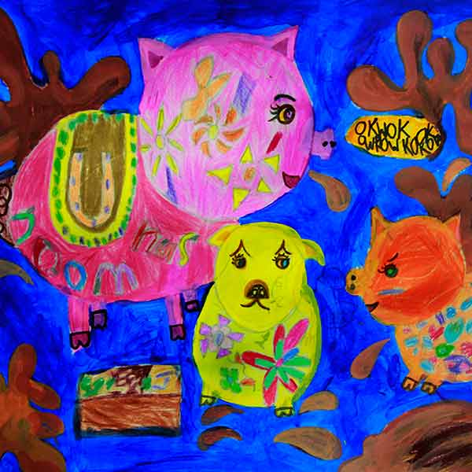
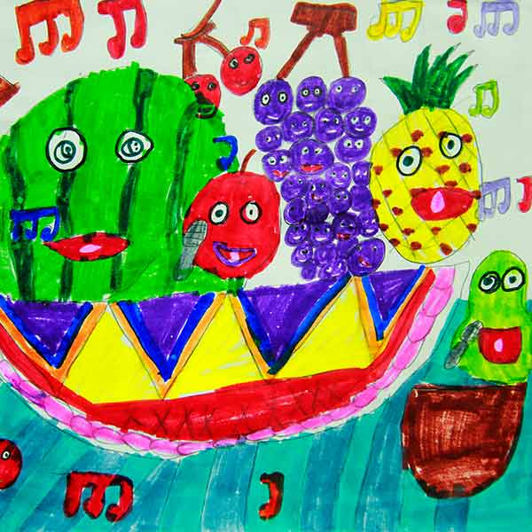
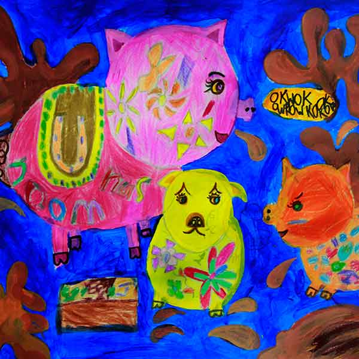
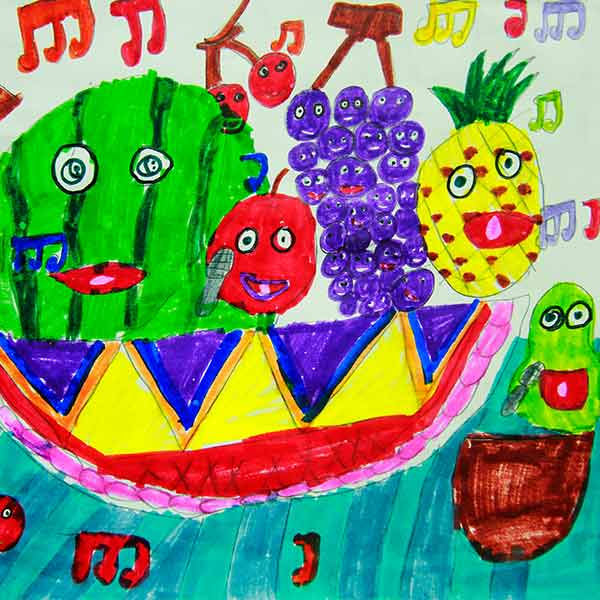
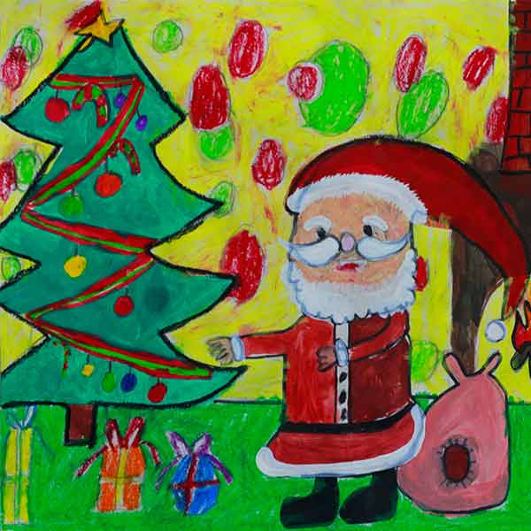
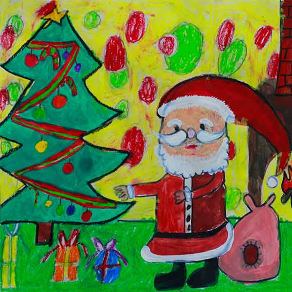
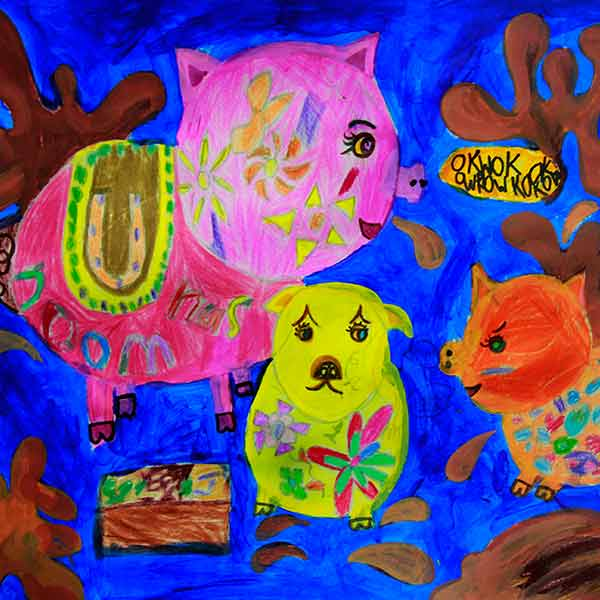
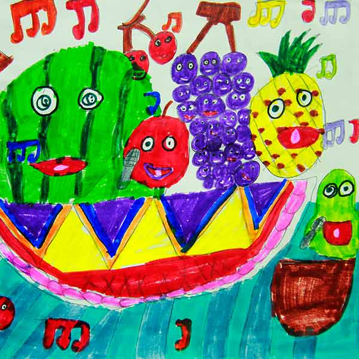
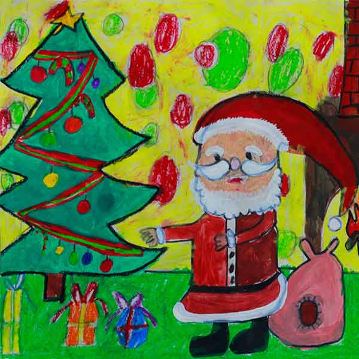

 

天彩美术丰富的教学和快乐的创造体验，将为您的孩子获得一个健康活跃的右脑、 一个流畅逻辑的左脑、一双善于发现的眼睛、一种热爱艺术的修养、一份敢于创造的勇气、 一生表达畅想的能力。
常年招生 小班授课 因人施教 寓教于乐 渥太华天彩美术学校，为学生营造了一个充满浓郁艺术氛围的绘画环境，本着因人施教的原则，采用多元化，多层次的教学模式，寓教于乐，以最适合孩子的方式，来调动各年龄段学生对绘画的好奇心和积极性，激发学生的兴趣，创作有特色的艺术作品。 “天彩美术”在结合东西方美术教育的基础上，依据儿童绘画的心理特征和造型能力的特点，开创出自己的一套独特的行之有效的,适应当代儿童绘画特点的美术教学系统。 “天彩美术”不但提供高质量的专业美术课程，同时定期组织学生作品展览，与社会互动交流。向学生提供国际国内参展，参赛机会，并通过各种媒体，为孩子们创造展示艺术才能的舞台。
作品展示区文字：绘画是孩子们的美丽游戏，绘画也让孩子们心中恬静~~~~变着法儿的给孩子绘画的兴趣，是“天彩美术”执着多年的教学理念。绘画有了吸引力，孩子便有了绘画的冲动，很多绘画技巧可以用游戏方式来得以体现，适合孩子的教学方式就是最好的、最恰当的办法。


